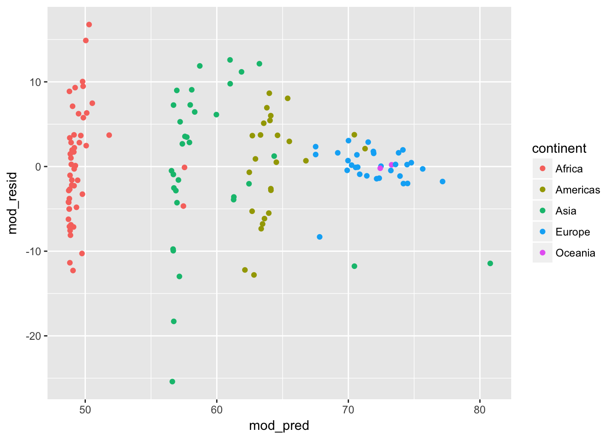
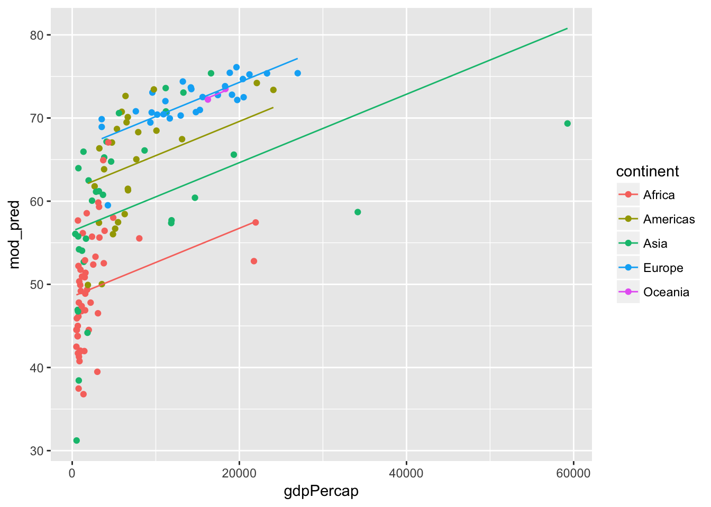

R for reproducible scientific analysis
Statistical Models
Learning Objectives
- Understand how to execute and interpret basic statistical models
- Discover, learn, and use lm class methods
Linear models
This workshop can’t and won’t teach you statistical modeling, but we can teach you the basic syntax you need to know to use R’s statistical modeling infrastructure.
To keep things simple we will start by filtering out just the data from 1977 from the gapminder data. Simplifying the data in this way will make it easier to focus on the mechanics of model fitting in R without getting distracted by the complexity of the data.
gapminder <- read_csv('data/gapminder-FiveYearData.csv')Parsed with column specification:
cols(
country = col_character(),
year = col_integer(),
pop = col_double(),
continent = col_character(),
lifeExp = col_double(),
gdpPercap = col_double()
)
gapminder77 <- filter(gapminder, year == 1977)Fitting linear models
lm is the function for a linear model. lm expects a formula as its first argument. Formulas in R are specified with a tilde separating the left and right hand sides. For example, DV ~ IV1 means “DV is a function of IV1”.
The second argument to lm is the name of the data.frame in which the variables are to be found. For example, model life expectancy as a function of gdp:
lm(lifeExp ~ gdpPercap, gapminder77)
Call:
lm(formula = lifeExp ~ gdpPercap, data = gapminder77)
Coefficients:
(Intercept) gdpPercap
5.348e+01 8.322e-04
Arithmetic operators have different meanings inside a formula than they do elsewhere in R. For example, outside of a formula + means “addition”, but inside a formula + means “include”. For example, we can include both gdpPercap and continent as predictors of lifeExp by separating the right-hand-side variables with a +.
Now we will assign the results of the model to a variable called model and then get a more detailed description of the results by calling the summary function.
model <- lm(lifeExp ~ gdpPercap + continent, gapminder77)
summary(model)
Call:
lm(formula = lifeExp ~ gdpPercap + continent, data = gapminder77)
Residuals:
Min 1Q Median 3Q Max
-25.4014 -3.1606 0.1833 3.6260 16.7703
Coefficients:
Estimate Std. Error t value Pr(>|t|)
(Intercept) 4.852e+01 9.334e-01 51.981 < 2e-16 ***
gdpPercap 4.114e-04 7.834e-05 5.251 5.68e-07 ***
continentAmericas 1.285e+01 1.642e+00 7.826 1.26e-12 ***
continentAsia 7.889e+00 1.518e+00 5.197 7.26e-07 ***
continentEurope 1.755e+01 1.763e+00 9.951 < 2e-16 ***
continentOceania 1.723e+01 4.872e+00 3.536 0.000556 ***
---
Signif. codes: 0 '***' 0.001 '**' 0.01 '*' 0.05 '.' 0.1 ' ' 1
Residual standard error: 6.57 on 136 degrees of freedom
Multiple R-squared: 0.6697, Adjusted R-squared: 0.6576
F-statistic: 55.15 on 5 and 136 DF, p-value: < 2.2e-16
Notice that the same summary function gives summary information of a different type depending on whether its argument is a data.frame, a linear model, or something else. That’s handy!
Other arithmetic operators have special meaning inside formula as well. For example, we can specify interaction effects by separating variables with *:
interaction_model <- lm(lifeExp ~ gdpPercap * continent, gapminder77)
summary(interaction_model)
Call:
lm(formula = lifeExp ~ gdpPercap * continent, data = gapminder77)
Residuals:
Min 1Q Median 3Q Max
-26.0089 -3.3857 0.0334 3.1294 16.4923
Coefficients:
Estimate Std. Error t value Pr(>|t|)
(Intercept) 4.810e+01 1.079e+00 44.566 < 2e-16 ***
gdpPercap 5.717e-04 2.226e-04 2.569 0.0113 *
continentAmericas 1.055e+01 2.511e+00 4.203 4.83e-05 ***
continentAsia 8.955e+00 1.751e+00 5.113 1.09e-06 ***
continentEurope 1.826e+01 3.384e+00 5.398 3.03e-07 ***
continentOceania 1.430e+01 7.677e+01 0.186 0.8525
gdpPercap:continentAmericas 2.088e-04 3.354e-04 0.623 0.5347
gdpPercap:continentAsia -2.439e-04 2.434e-04 -1.002 0.3181
gdpPercap:continentEurope -1.816e-04 3.047e-04 -0.596 0.5522
gdpPercap:continentOceania 3.294e-05 4.439e-03 0.007 0.9941
---
Signif. codes: 0 '***' 0.001 '**' 0.01 '*' 0.05 '.' 0.1 ' ' 1
Residual standard error: 6.584 on 132 degrees of freedom
Multiple R-squared: 0.678, Adjusted R-squared: 0.6561
F-statistic: 30.89 on 9 and 132 DF, p-value: < 2.2e-16
In short you should never assume that an arithmetic operator does the same thing inside a formula that it does outside a formula. For details on the meaning of operators inside R formula refer to help("formula").
Working with model fit objects
Earlier we noted that the summary function does something different for linear model objects than it does for vectors, data.frames, or other things. This is because the summary function has a specific method for lm models. Many other functions in R have specific methods for lm models as well. We can ask R to show us these functions using the methods function, like this:
class(interaction_model)[1] "lm"
methods(class = "lm") [1] add1 alias anova case.names
[5] confint cooks.distance deviance dfbeta
[9] dfbetas drop1 dummy.coef effects
[13] extractAIC family formula fortify
[17] hatvalues influence kappa labels
[21] logLik model.frame model.matrix nobs
[25] plot predict print proj
[29] qr residuals rstandard rstudent
[33] simulate summary variable.names vcov
see '?methods' for accessing help and source code
Using this technique we’ve learned (among other things) that we can ask R to display the ANOVA table for linear models like this:
anova(interaction_model)Analysis of Variance Table
Response: lifeExp
Df Sum Sq Mean Sq F value Pr(>F)
gdpPercap 1 6829.0 6829.0 157.5231 <2e-16 ***
continent 4 5073.6 1268.4 29.2578 <2e-16 ***
gdpPercap:continent 4 148.1 37.0 0.8538 0.4937
Residuals 132 5722.5 43.4
---
Signif. codes: 0 '***' 0.001 '**' 0.01 '*' 0.05 '.' 0.1 ' ' 1
and that we can compute confidence intervals around the regression estimates like this:
confint(interaction_model) 2.5 % 97.5 %
(Intercept) 4.596704e+01 5.023711e+01
gdpPercap 1.314193e-04 1.011956e-03
continentAmericas 5.584992e+00 1.551742e+01
continentAsia 5.490166e+00 1.241942e+01
continentEurope 1.157077e+01 2.495682e+01
continentOceania -1.375552e+02 1.661605e+02
gdpPercap:continentAmericas -4.547025e-04 8.723375e-04
gdpPercap:continentAsia -7.253885e-04 2.375353e-04
gdpPercap:continentEurope -7.843824e-04 4.211678e-04
gdpPercap:continentOceania -8.747124e-03 8.812996e-03
We can also use the predict and residuals functions to extract predictions and errors of prediction from our model. It can be useful to store these as columns in the original data to make visualizing the model easier.
gapminder77 <- mutate(ungroup(gapminder77),
mod_pred = predict(model),
mod_resid = resid(model))Now that we have augmented the data with predicted values and residuals from the model we can plot those values to better understand what our model says about our data. For example we can inspect a scatter plot of the residuals versus predicted values to see if there are trends in the residuals:
ggplot(gapminder77, aes(x = mod_pred, y = mod_resid, color = continent)) +
geom_point()
and we can plot the predicted values from out model:
ggplot(gapminder77, aes(x = gdpPercap, y = mod_pred, color = continent)) +
geom_point(aes(y = lifeExp)) +
geom_line()
glm and beyond
Finally, the specification of generalized linear models such as logistic or Poisson regressions is very similar via the glm command. See ?glm and the web for help. Beyond glm’s, the statistical capabilities of R are extensive. Recommended packages and functions orgainized by topic are available at https://cran.r-project.org/web/views/. The Social Sciences task view at https://cran.r-project.org/web/views/SocialSciences.html is a good place to start looking for model-fitting function recommendations.
Challenge - A plot and a model
- Filter the
gapminderdata to extract just the data for the most recent year. - Using the filtered data, make a scatterplot of lifeExp versus gdpPercap.
- Add a smoother and specify
method = lmto get a linear fit. - Run a linear regression of lifeExp on gpdPercap and use
summaryto view the model results. - Do your plot and model point to the same conclusions? Which do you find easier to interpret?
Advanced
- Does the relationship between lifeExp and gdpPercap vary across continents?
- Hint: An interaction model can answer that question.
Bonus challenge - Stock prices
If you have finished the above exercise while other learners are still working… - Using the stock data you tidy’d earlier, fit a simple linear model of stock performance. - Extract the model coefficients into a data.frame. - Fortify the data with residuals, predicted values, etc. - Examine (however you wish) residuals by stock. Is the model particularly over or underpredicting any particular stock? How could you improve the model? - Advanced: Build that better model.